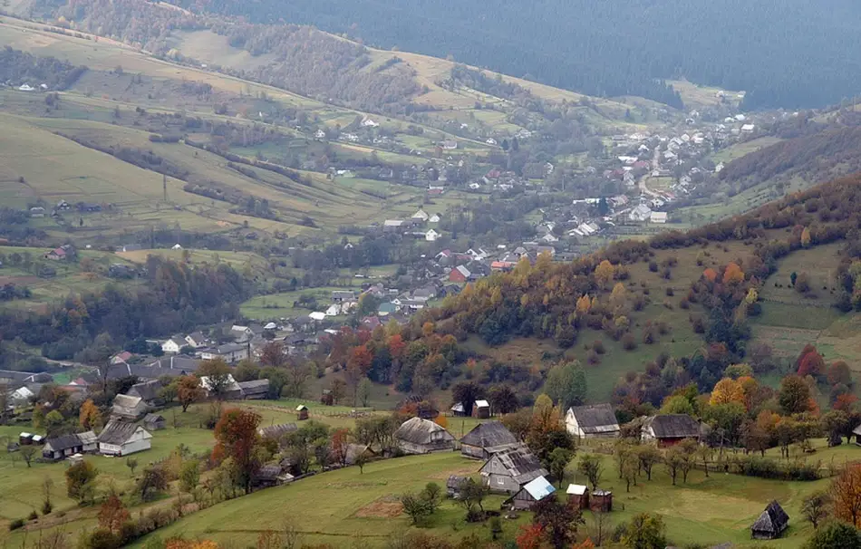
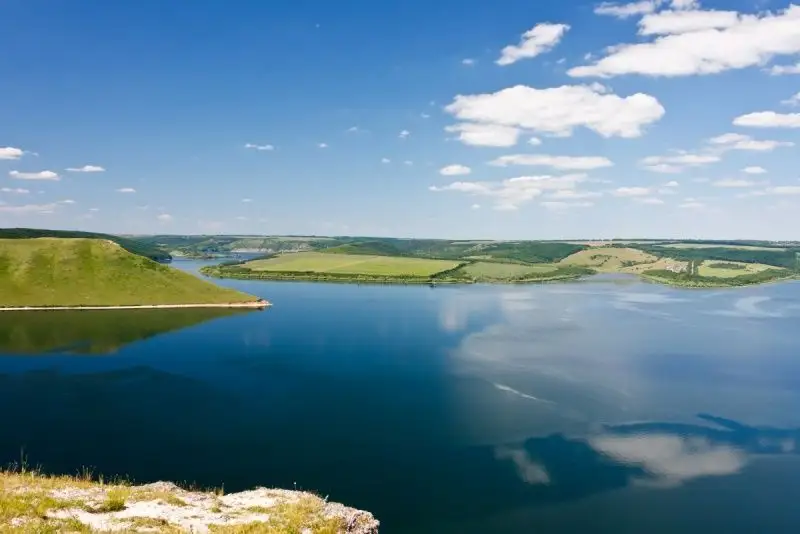
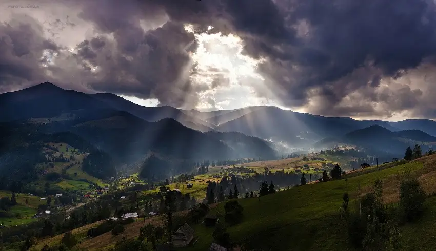
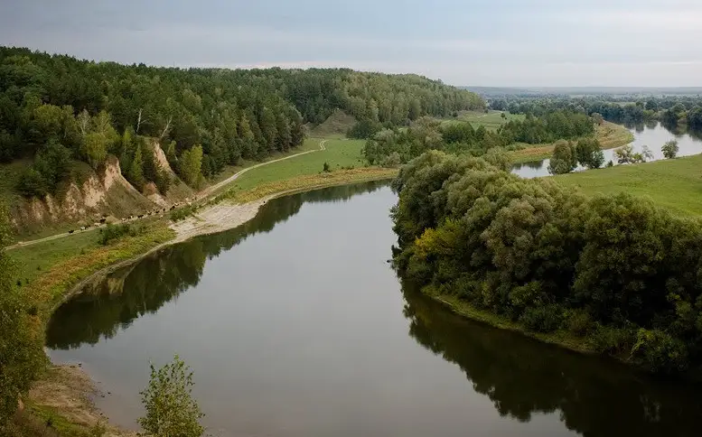
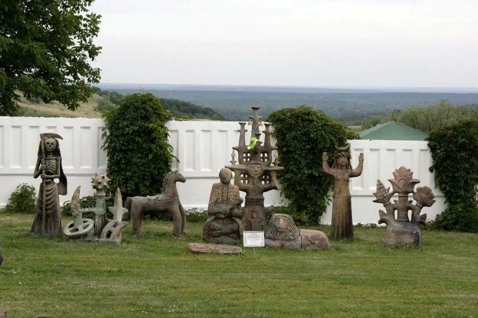
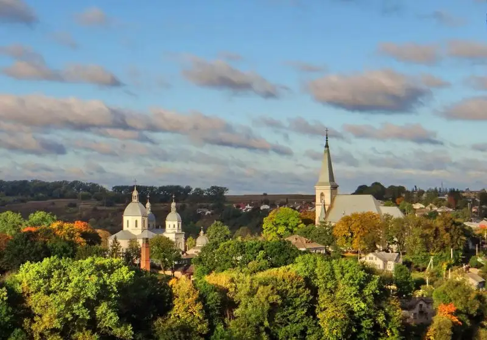
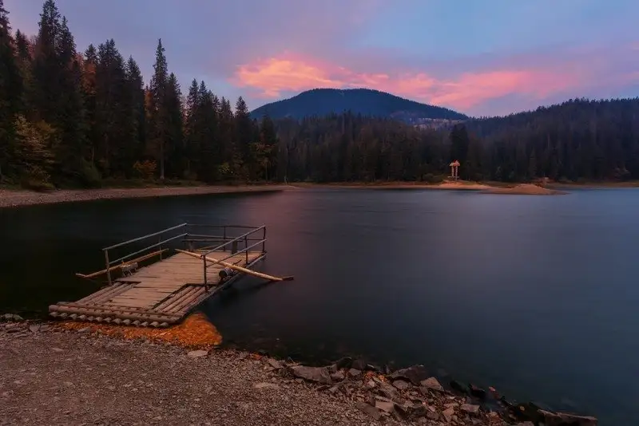

"Фішки" Українського села:
Села сильно залежать від своїх жителів: чим менший рівень довіри між сусідами - тим вищі паркани і навпаки. У деяких селах глухі паркани замінені на огорожі. Відповідно, і хати виглядають більш акуратно і святково.
Рівень довіри в селах формується виключно живим прикладом і ніяк інакше. Чим більше для свого села робить Голова - тим швидше люди починають довіряти один одному і дбати про громадські місця. Самостійно робити що-небудь для всіх, а не для себе, вважається неправильним і буде сприйнято з підозрою: ніби ви хочете стати головним і, відповідно, красти, як інші.
П'ють багато, починаючи з 20 років. Асортимент горілки в сільському магазині майже завжди перевищує асортимент хліба або чаю. Більшість по-старому п'є самогон - горілку відкривають у свята. Досі прийнято судити про якість алкоголю за наявністю чи відсутністю головного болю на ранок.
Людина з трактором - це місцевий Ілон Маск. Вважається, що трактор є тільки у забезпечених селян. Трактор приносить дохід за рахунок того, що його здають в оренду - орати поля. Власник трактора завжди сприймається трохи більш просунутю людиною, ніж інші. Якщо у вас є трактор і активна життєва позиція - ви можете стати Головою села.
Шиком вважається, коли приїжджають діти з Києва. Це помічають сусіди і бачать проходячи повз будинок селяни - за припаркованим у дворі автомобілем. Марка автомобіля не має ніякого значення - для літніх людей всі іноземні автомобілі чудові у своїй недоступності.
Діти ж, у свою чергу, невміло і смішно допомагають батькам на полях. Начебто і праця копійчана в результаті, але й відмовитися не можна. От і стоять міські немов контужені - з лопатами і граблями в полі. Але найбільше задоволення такі поїздки приносить онукам, які з криками радості бігають між дорослими. Дітям і жителям села потрібно набагато менше для щастя, ніж багатьом з нас.
Трішки сільської творчості:
В інкубаторі, сидів дідок.
Почухав яйця і сказав:
-"Ти хочешь в армію? Оуо! Ти, підеш в армію!"
А за горою, пасся петух.
Корова перднула, петух потух.
Не хочу в армію! Оуо! Не піду в армію.
Я пам'ятаю, свое рідне село,
Як я на тракторі ганяв у кіно.
Не хочу в армію! Оуо! Не піду в армію.
Я пам'ятаю, свое рідне село,
Як я лопатою черпав гімно.
Не хочу в армію! Оуо! Не піду в армію.
Я пам'ятаю рідний мопед,
Як на ньому я зламав хребет.
Не хочу в армію! Оуо! Не піду в армію.
А я назбираю мішок гранат,
І підірву военкомат!
І підірву його! Оуо! І підірву його!
А в армії є йще один военкомат,
А я назбіраю йще один мішок гранат.
І підірву його! Оуо! І підірву його!
Українські села різноманітні і в кожному регіоні є свої особливості.
10 найнезвичніших сіл України
- КОЛОЧАВА. ЗАКАРПАТСЬКА ОБЛАСТЬ 
- БАКОТА. ХМЕЛЬНИЦЬКА ОБЛАСТЬ 
- ДЗЕМБРОНЯ. ІВАНО-ФРАНКІВСЬКА ОБЛАСТЬ 
- МЕЗИН. ЧЕРНІГІВСЬКА ОБЛАСТЬ 
- ОПІШНЯ. ПОЛТАВСЬКА ОБЛАСТЬ 
- СТРУСІВ. ТЕРНОПІЛЬСЬКА ОБЛАСТЬ 
- ТРИКРАТИ. МИКОЛАЇВСЬКА ОБЛАСТЬ
- РОЗТОКИ. ЧЕРНІВЕЦЬКА ОБЛАСТЬ
- СИНЕВИР. ЗАКАРПАТСЬКА ОБЛАСТЬ 
- ПІДГІРЦІ. ЛЬВІВСЬКА ОБЛАСТЬ


Самогон, найпопулярніший напій в сільських колуарах. Що ж таке самогон?
Склад самогону
Склад самогону в першу чергу залежить від доступності сировини в тому чи іншому регіоні. Залежно від вихідних інгредієнтів існують такі види самогону як: зерновий, плодово-ягідний або фруктовий, буряковий, а так само картопляний. Крім основного інгредієнта, з якого виготовляють брагу до складу самогону входить цукор, вода і зацукровані крохмаль.
Види самогону
У світовій питному традиції існують такі види самогону: moonshine - це американський самогон, палінка - угорська, chicha casera проводиться в Латинській Америці, німецька самогонка називається Schwarzgebranntes. Поляки здавна варять Bimber або Samogon, інші східні слов'яни білоруси готують гарелку, а українці Горiлка. Витончені французи придумали власний рецепт самогону під назвою tord-boyaux, латиші називають міцний напій - kandza, а литовці - samogonas.
За свою багатовікову історію міцний напій виготовляли з різної сировини і різними способами. До нашого часу популярний так званий "домашній або кустарний" самогон, такий міцний напій виготовляється на саморобному самогонний апарат. Існує і промислове виробництво алкогольного напою. Однак, вважається, що такий напій не може зрівнятися за якістю і смаком з кустарними аналогами, тим більше користі від самогону, звареного і розлитого на заводі немає